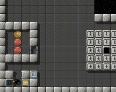
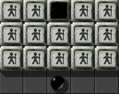
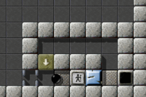

Уровень МесяцаМы хотим каждый месяц больше внимания уделять превосходным уровням. Превосходные уровни это те, у которых средняя оценка пользователей наивысшая и в целом много оценок. Следовательно это Ваш выбор. Поэтому пожалуйста оценивайте уровни, на которых Вы играете и не забывайте присылать Ваши оценки вместе с результатами в конце каждого месяца. Вы можете найти все предыдущие уровни месяца в нашем архиве. Сентябрь 2007: «Tool Time» от Barry и Lori MeadВам это знакомо? Вы в своем переполненном гараже, Ваш надежный лазерный станок справа от Вас, чашечка кофе стоит на низкой полке в углу, полностью покрытый ржавчиной камень oxyd перед Вами в ожидании ремонта; и Вас беспокоит только один вопрос: «Куда я положил молоток?» Да, это «Tool Time»!

Enigma II # 97
По нашим данным в июле 13 пользователей проголосовали за «Tool Time», в среднем 8.46, что обеспечило «Tool Time» 6 место в нашем Рейтинге УМов, наравне с «Elaborate», который за последние два месяца утратил свое неустойчивое лидерство над «Labyrinth of Puzzles». И другая неожиданность текущего рейтинга: После двухмесячного нахождения на втором месте после «Island Labyrinth», «The Aztec Temple» снова возглавляет список, с крайне малым преимуществом: 9.17 и 9.13! «Было мудрено догадаться, как получить большинство инструментов»К сожалению, в этом месяце только один из трех игроков, которых мы попросили оставить комментарий, отозвались на наше предложение; четвертый бегло ответил, что у него нет времени. Из-за того, что уже не оставалось времени попросить остальных написать свои отзывы (и мы не няни, кстати), статья этого месяца будет короче, чем обычно. Я думаю они отзовутся на пике УМа, который мы уже переступили, не так ли, Harry? Верно, Andreas, статья о последнем УМ о «Houdini» несомненно была вершиной истории УМа, но разве не приятно снова и снова писать о замечательных уровнях Enigma каждый месяц? С помощью наших игроков или без нее мы конечно должны отдать должное «Tool Time» как еще одной вершине искусства оформления уровней. Или ты не согласен, Andreas? Должны ли мы сдаться из-за недостатка поддержки, как Титаник сдался на волю пробоин, сделанных айсбергом? А может кто-нибудь скажет, что краткость сестра таланта? Если я сравню свой личный рекорд в «Houdini» с тем что в «Tool Time», последний действительно кажется весьма маленьким. Но на самом деле, чтобы собрать вместе все вещи, необходимые для окончательной победы нужно некоторое время. О, просто посмотри на эту замечательную рифму, Andreas(см. оригинал в английском варианте статьи, к сожалению сохранить рифму в переводе не удалось)! Тебе не кажется, что я становлюсь хорошим поэтом?

«Погодите, оловянные солдатики,
сейчас я найду оловянный меч …» Я с тобой согласен, Harry. Но я не представляю, как ты планируешь сохранить этот очаровательный кусочек поэзии в немецком его варианте? ;-) Что касается действующих лиц, оформление «Tool Time» достаточно знакомо, и часто встречалось в других уровнях, на подобие «Set Me Free» или «Laser Paradise». На ум приходит чрезвычайно похожий «Disk Royal». Я думаю его можно назвать «оформление в стиле illmind», а ты как думаешь, Harry? Точно так же, Andreas, но не отстает ли тот период, который ты называешь «оформление в стиле illmind» на два года от выпуска «Tool Time»?. Конечно ты имел ввиду эту смесь элементов оформления st-rock1 и fl-black, которые придают жуткое чувство прогулки по покинутому замку доктора Франкенштейна, каждую секунду ожидаешь появления его крадущейся фигуры в углу и от этого волосы встают дыбом! Если мои исследования по этому вопросу, сделанные совместно с моим слугой Grep, были выполнены верно Barry & Lori Mead первыми воспользовались этим сочетанием камней/поверхностей и потому было бы честней назвать эту комбинацию Mead-оформление. Ведь так, Andreas? Я думаю да, Harry. А «Tool Time» первый в еще одном отношении: Это наш первый уровень месяца, в котором нужно тщательно искать спрятанные объекты. Это не грубый перебор - скорее последовательное исследование, из которого сплетена эта особенность. Что касается Франкенштейна, скрывание за преобразованиями - другой восхитительный аспект этого уровня, и конечно самый изумительный для начинающих. Обрати внимание на это:
Я считаю уровень хорошо спроектирован в отношении использования предметов. Каждый предмет по-разному
используется в уровне, и было мудрено догадаться, как получить большинство инструментов
из других предметов, это лучше чем просто подобрать и использовать.
Я очень расстраиваюсь, когда заканчиваю его решать. У меня
было несколько попыток, каждая заканчивалась использованием зонтика, чтобы перейти через
бездну в правый верхний угол и ударить oxyd, потом бегом вниз
уровня, прибытием к другой бездне сразу после окончания действия зонтика -
только для того, чтобы наконец осознать, что есть более простой путь, чем тот что я уже видел.
Если у этого лазера большая мощность, мы можем взорвать ту стену к югу или возможно мы можем создать паровой молот Binford 6100. Действующие двери в стенах просто детский лепет с таким инструментом! Ничто не победит правильный инструмент, как говорит тетушка Julie из Йоркшира, ты с этим согласен, Andreas? Я так не думаю, Harry. Здесь сплошная скала 1-го типа. Если бы она была 3-го типа, это бы сработало. Но Mark выбрал другой путь. «Мы придумали небольшую ловушку, которая была бы основой всего уровня»Barry и Lori - одни из менее известных авторов и я очень рад, что один из их трех уникальных уровней наконец стал УМ. Здесь изложена история «Tool Time», в том виде, в каком Barry прислал ее нам:
Я одинокий отец и моя дочь приезжает ко мне два раза в год. Когда Lori
навещает меня, мы любим играть в компьютерные игры и мы долго искали игру,
в которой есть решение головоломок. Я познакомился с Enigma, когда ввел в
google «Puzzle Games» и мы начали играть.
После того, как мы решили около 95% уровней, мы начали выяснять какие
уровни нам нравятся и в каких наши раздумья сводились к
«боли-в-шее». Мы выяснили, что «НАМ» нравятся
головоломки, которые заставляют Вас ИССЛЕДОВАТЬ и ДУМАТЬ. Нам не нравятся головоломки, которые заставляют Вас
почти все время ТОРОПИТЬСЯ.
Я 25 лет работал главным инженером по электронике/программному обеспечению, поэтому
язык написания уровней Enigma не был для меня сложным, а моя дочь
Lori фактически располагала большинство подлинно хитрых тайников, и атрибутов подлых головоломок.

Ловушка Mead
Единственная идея, которую мы никогда раньше не видели ни в одном уровне, состояла в том
что у нас была «пара» инструментов, чтобы выбраться из ловушки, в которую
Вы попали. Мы спроектировали небольшую ловушку, требующую
«и меч, и молоток», чтобы спастись, и это была основа всего
уровня.
Нам также понравилась идея о семени деревянного блока, которое должно быть посеяно под решеткой ворот,
чтобы обеспечить его использование во всех трех возможных целях. Деревянный блок
«1. Оставляет нажатым переключатель, 2. Изменяет номинал монеты, и 3. Создает мост
через бездну».
Также мы никогда не видели, чтобы кто-то прятал предметы под покрытием
открытого космоса, где Вы должны продумать траекторию движения, чтобы найти предмет.
Я думаю на создание этого уровня нас вдохновил опыт игры на всех уровнях
версии 0.82, совмещенный с любовью к головоломкам.
Нам пришел на ум «Pneumatic Delivery» Manuel'я, который он создал для своего отца. И «Tool Time» совместный проект отца и дочери. Отрадно видеть, как Enigma объединяет родителей и детей, даже без сетевой игры. Barry, Lori, огромное вам спасибо за этот важный урок, и великий уровень, которым вы с нами поделились! С уважением, |